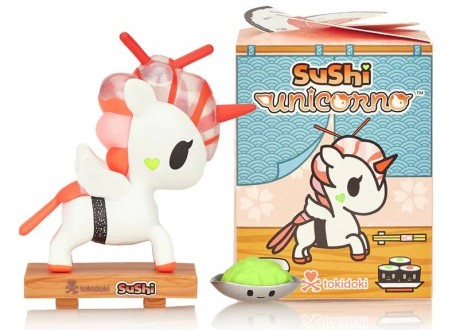
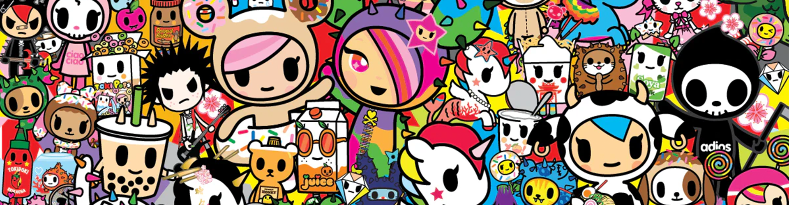
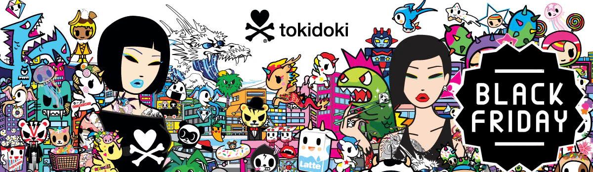
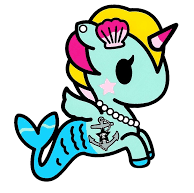

Productos

Noticias



En TOKIDOKI, creamos universos imaginativos y vibrantes llenos de personajes entrañables y únicos, como los adorables Cactus Friends, Donutella y Sandy, que han conquistado corazones alrededor del mundo. Cada uno de nuestros diseños está inspirado por una fusión de arte pop, cultura japonesa y una buena dosis de creatividad sin límites. Nuestra misión es simple pero poderosa: queremos contagiarte de nuestra energía positiva, transformando lo cotidiano en algo extraordinario. Al sumergirte en el mundo de TOKIDOKI, no solo adquieres productos llenos de color, sino también una sensación de diversión, alegría y un toque de magia. Porque en nuestro universo, todo es posible y siempre hay espacio para un poco de locura y encanto. Desde figuras coleccionables, ropa y accesorios hasta artículos de papelería y juguetes, cada producto TOKIDOKI está pensado para añadir un toque único a tu vida. Queremos ser parte de tus momentos especiales, hacerte sonreír y recordar que siempre es bueno dejar que la imaginación vuele. ¡Bienvenidos al maravilloso mundo de TOKIDOKI, donde la diversión nunca termina y la magia está al alcance de todos!

En TOKIDOKI, transformamos lo cotidiano en algo extraordinario con nuestros productos llenos de color y creatividad. Desde nuestras icónicas figuras de vinil, como los Cactus Friends y Sandy, hasta ropa, mochilas y accesorios, cada artículo está diseñado para añadir un toque único a tu vida. También ofrecemos papelería divertida, juguetes de colección y artículos para el hogar, todo con la esencia de nuestro estilo pop y cómic. Cada producto TOKIDOKI es una invitación a vivir con magia, alegría y una pizca de locura, ¡porque aquí todo es posible y siempre hay espacio para la diversión!
Productos

Noticias